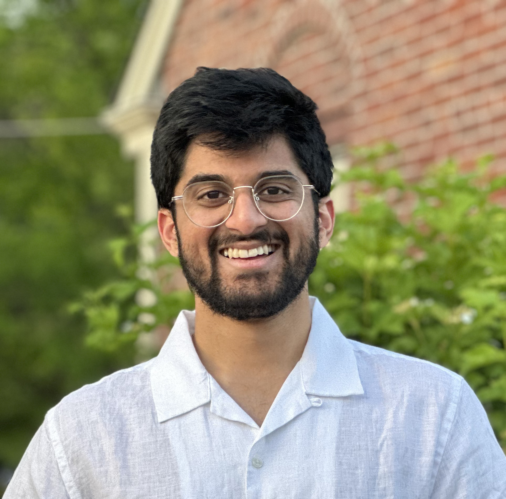

Machine Learning · Healthcare
I am a senior PhD student at Dartmouth College, advised by Prof. Andrew Campbell. My research develops machine learning techniques to study health in real-world settings, drawing on data from wearable devices and mobile phone sensors. I am currently focused on Health Foundation Models. To this end, I have developed PaPaGei, the first open-source foundation model for Photoplethysmography (PPG) [ICLR’25], and proposed Time2Lang, a framework to integrate time-series foundation models with LLMs [CHIL’25]; LENS, a system that aligns multimodal sensing with LLMs for mental health narrative synthesis [ACL’26]; and SLIP, a method for learning transferable sensor models via language-informed pretraining [ICLR’26 Workshop].
Previously I was a Student Researcher at Google (Cambridge, MA) and a Research Intern at Nokia Bell Labs (Cambridge, UK). Before my PhD I spent two years as an AI & Data Graduate Scientist at AstraZeneca.
LENS: LLM-Enabled Narrative Synthesis for Mental Health by Aligning Multimodal Sensing with Language Models
ACL 2026 — Annual Meeting of the Association for Computational Linguistics
Student Researcher
Research Intern
Nokia Bell Labs
AI & Data Graduate Scientist
AstraZeneca